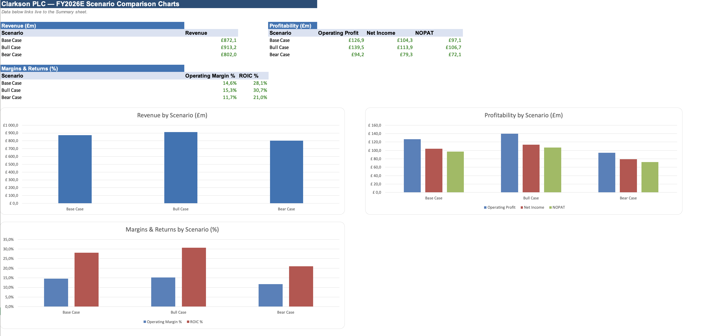

FEATURED / RESEARCH & FINANCIAL ANALYSIS
Clarksons: what drives the H2 profit range?
I built a segment-level Excel model to examine how different shipping-market assumptions could affect Clarksons’ results.

What the model showed: removing the additional disruption assumption lowers Base H2 operating profit from £70.11m to £60.85m. That £9.26m difference makes the assumption worth examining before relying on the headline forecast.
Model v5.3 · 27 September 2026 · Scenario estimates, not actual results. Operating profit excludes acquisition-related costs.
My contribution: research, model design and review, with AI assistance. Workbook, appendix and correction log available.
Read the case & inspect the model ↗